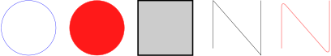
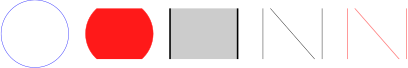
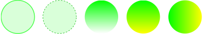
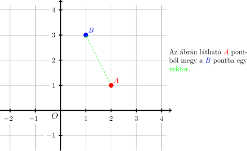
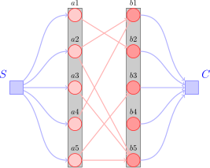

TikZ gyorstalpaló, példák
fejezet 1 TikZ gyorstalpaló
1.1. Alapok
A \usepackage{tikzpicture} kell a library implementálásához A \begin{tikzpicture} és \end{tikzpicture} parancsok közé kell helyezni a rajzolandó ábrát. A TikZ úgy működik, mint egy rajztábla. Egyesével kell az objektumokat rárajzolni, esetenként egy ciklusban többet is lehet egyszerre (lásd lejjebb). Minden parancsot egy ;-vel kell lezárni.
A \begin{tikzpicture}["paraméterek"] ebben a szögletes zárójelben kell megadni a rajztábla paramétereit. Ilyenek:
-
• ”scale = 3” – a képet nyújtja, kivéve a betű méretet
-
• ”xscale = 4, yscale = 5” – ugyanez, csak merőlegesen affin képet ad
A rajzolásra két különböző, de általában mindenre elég parancs a \draw és \filldraw . A sima rajzolás csak körvonalat rajzol, a másik pedig automatikusan ugyanazzal a színnel kitölti az alakzatot. Mindkettő parancsnak meg kell mondani, hogy:
-
• Hova: (x, y), (fok:hossz)
-
• Mit: node, -- (edge), circle, rectangle, arc
-
• Stílusban: [color, ultra thin, fill] – ez lehet üres, ilyenkor a rajztábla stílusát használja
A node-ok kicsit trükkösebbek, róluk a gráfok részben lehet részletesebben olvasni.
\begin{tikzpicture}[scale=3]
%a köröknek a kp.-át és sugarát kell megadni
\draw (0,0) circle (0.4 cm) [color = blue!90];
\filldraw (1,0) circle (0.4 cm) [color = red!90];
%a téglalapoknak a balalsó és jobbfelső csúcsait kell megadni
\draw (2-0.4, -.4) rectangle (2+0.4, .4) [ultra thick, fill=black!20];
%a törött vonalakat csúcsról csúcsra kell megadni
\draw (3-0.3, -0.3) -- (3-0.3, 0.4) -- (3+0.4, -0.4) -- (3+0.4, 0.4);
%ami sokkal menőbb, például egy rácsbejáráshoz az íveltvonalak
\draw[thick,rounded corners=8pt, color=pink!200] (4-0.3, -0.3) -- (4-0.3, 0.4)
-- (4+0.4, -0.4) -- (4+0.4, 0.4);
%Ha a törött vonalat lezárnád érdemes a --cycle befejezést írni a kezdő csúcs
%megismétlése helyett.
\end{tikzpicture}

1.1.1. Illesztés
Az első fejezetben leírtakat érdemes alkalmazni. A \clip parancsot érdemes használni. Nem csak arra jó, hogy kivágjuk a kép egy részét, de beállítja a kép keretét, ha azzal kezdjük. Erre persze lehet használni a \useasboundingbox parancsot amivel megadhatunk például egy téglalappal határolt fix keretét a képnek. Amit ezen kívül rajzoltál nem fogja megjeleníteni.
\begin{tikzpicture}[scale=3]
\draw (0,0) circle (0.4 cm) [color = blue!90];
%Itt vágunk ami azt okozza, hogy az előző kör nem sérült
\clip (-0.3, -0.3) rectangle (5, 0.3);
\filldraw (1,0) circle (0.4 cm) [color = red!90];
\draw (2-0.4, -.4) rectangle (2+0.4, .4) [ultra thick, fill=black!20];
%Lehet relatív megadni a távolságokat, hogy ne kelljen mindent papíron kiszámolni
%Ha csak sima +-t használsz, akkor a kezdő csúcstól viszonyít
\draw (3-0.3, -0.3) -- ++(0, 0.7) -- ++(0.7, -0.8) -- ++(0, 0.8);
\draw[thick,rounded corners=8pt, color=pink!200] (4-0.3, -0.3) -- (4-0.3, 0.4) -- (4+0.4, -0.4) -- (4+0.4, 0.4);
\end{tikzpicture}

1.1.2. Színek, egyebek
Be lehet állítani vonalvastagságot, színt és még színátmenetes ábrát is egyszerű csinálni.
-
• Vastagságok: {ultra, very, } + {thin, thick}
-
• Színek: { red, green, blue, cyan, magenta, yellow, black, gray, darkgray, lightgray, brown, lime, olive, orange, pink, purple, teal, violet, white }
-
• Vonal típusok: {dashed, dotted}
-
• Vonal összekötési lehetőségek (advanced):
-
– line cap = {round, rect, butt}
-
– rounded corners = 5mm
-
– line join = {round, bevel, mitern}
-
\begin{tikzpicture}[scale=3]
\draw (0,0) circle (0.4) [color = green!70, fill = green!15, ultra thick];
\draw (1,0) circle (0.4) [color = green!70!black, fill = green!15, thick, dashed];
\shade (2,0) circle (0.4) [top color = green];
\shade (3,0) circle (0.4) [top color = green, bottom color = yellow];
\shade (4,0) circle (0.4) [left color = green, right color = yellow];
\end{tikzpicture}

1.2. Sokszögek rajzolása, for ciklusok
Az, hogy lehet for ciklusokat írni, nagyban segít a valamilyen szempontból szimmetrikus ábrák elkészítésében. A for ciklusok hasonlóan más nyelvekhez bevezetnek egy változót, ami végig fut adott értékeken és végrehajtja a
megadott parancsokat egyesével (jobb ha nem számít a sorrend). Lehet egymásba ágyazott ciklusokat írni, de lehet párhuzamosan két vagy több változót egyszerre változtatni. Például \foreach \x in {1,2,3,4}{
Eddig nem volt róla szó, de a hagyományos koordinátázás helyett lehet polárkoordinátákat is használni. (90:1cm) – 90 fok, 1 cm messze
A képet lehet transzformálni erre pár példa: xshift, yshift, rotate
\begin{tikzpicture}[scale = 2, ultra thick]
\foreach \n in {3, ..., 8}{ \draw (\n-3,0) \foreach \d in {1, ..., \n}{ %MAGIC DANGER
+(\d*360/\n:0.3cm) -- +(\d*360/\n + 360/\n:0.3cm) };
%Az, hogy ilyet lehet csinálni szerintem egyszerre undorító és hasznos
%Ez kell ahhoz, hogy a szín mögé lehessen írni változót (nem igazán lehet képletet)
\pgfmathsetmacro\i{\n*15-30}
\filldraw [xshift = \n-3, color = green!\i] (\n-3,-1) circle (0.3cm);
}
\end{tikzpicture}

1.3. Rácsok, szöveg beillesztése
A \draw grid parancsot lehet négyzetrács készítésre használni a \foreach helyett. Meg kell adni a lépésközt és egy téglalapot ami határolja.
Szöveget beilleszteni úgy kell, hogy egy Node-ot töltünk fel szöveggel. Paraméterként meg lehet adni, hogy az adott pozícióhoz képest, hol helyezkedjen el a csúcs és így a szöveg, ezt az anchor=
Itt különösen kiemelném a \clip parancs fontosságát. Ha egy ábrát szeretnék nagyban és kicsiben is használni elég megismételni a kódot és megadunk egy keretet, ahol kíváncsiak vagyunk az ábra részleteire.
\begin{tikzpicture}[scale = 3]
\clip (-1.2, -0.8) rectangle (4.2,2.2); %Ez csak azért, hogy jobban ráférjen a honlapra
%grid
\draw[step = 0.5, color=gray] (-2.1,-2.1) grid (2.1,2.1);
%axes
\draw[->, ultra thick] (0,-2.2) -- (0,2.2);
\draw[->, ultra thick] (-2.2,0) -- (2.2,0);
%texts
\draw (0,0) [fill = white, anchor = north east] node {\large $O$};
%y-tengely
\foreach \label in {1, 2, 3, 4}
\pgfmathsetmacro\pos{\label/2}
\draw [ultra thick](-1pt,\pos) -- (1pt, \pos) node [fill = white, left, xshift = -7pt] {$\label$};
\foreach \label in {-1, -2, -3, -4}
\pgfmathsetmacro\pos{\label/2}
\draw [ultra thick](-1pt,\pos) -- (1pt, \pos) node [fill = white, left, xshift = -7pt] {$\label$};
%x-tengely
\foreach \label in {1, 2, 3, 4}
\pgfmathsetmacro\pos{\label/2}
\draw [ultra thick](\pos, 1pt) -- (\pos, -1pt) node [fill = white, below, yshift = -2pt] {$\label$};
\foreach \label in {-1, -2, -3, -4}
\pgfmathsetmacro\pos{\label/2}
\draw [ultra thick](\pos, 1pt) -- (\pos, -1pt) node [fill = white, below, yshift = -2pt, xshift = -3pt] {$\label$};
%ábra
\draw (1, 0.5) node [color=red, anchor = south west] {$A$};
\draw (0.5, 1.5) node [color=blue, anchor = south west] {$B$};
\draw (0.5,1.5) node [color=blue, circle, fill=blue, scale =0.7] {};
\draw [->, green, dashed, ultra thick, opacity=0.5] (1, 0.5) -- (0.5, 1.5);
\draw (1, 0.5) node [color=red, circle, fill=red, scale =0.7] {};
\draw[xshift=2.1cm, yshift=1cm] node[right,text width=5cm]
{Az ábrán látható {\color{red} $A$} pontból megy a {\color{blue} $B$} pontba egy {\color{green} vektor}.};
\end{tikzpicture}

1.4. Gráfok
Lehet gráfokat úgy definiálni, hogy a csúcsokat megadjuk és utána az élek már a meglévő objektumainkat (csúcsok) kössék össze. Ez azért hasznos, mert rugalmasabb lesz az ábra. Ha esetleg változtatnánk a gráfon egy új csúcs behozásával nem kell az egész ábrát koordinátánként átírni. Elég csak a csúcsokat áthelyezni, a többit a TikZ megcsinálja nekünk. Ami még különösen hasznos, hogy tudunk a programban a csúcsoknak nevet adni és utána ezt a nevet használni referenciaként, hogy egy sokkal átláthatóbb kódot kapjunk végeredményül. Ez nem összekeverendő a csúcshoz tartozó szöveggel.
Amit szintén itt mutatnék be az a dinamikus stílus kezelés. Lehet ugyanis általunk előre definiált stílusokat megadni, hogy utána csak elég legyen annyit írni, hogy [fontos] vagy [seged]. Ezzel is azt érjük el, hogy olvashatóbb és egységesen változtathatóbb lesz a kód és így az ábránk.
A csúcsok és élek szövegezésére is sok lehetőséget ad a TikZ. A label=
Lehet az éleket hajlítani, kígyósítani és egyéb stilisztikai trükköket alkalmazni. Erre azt ajánlom, hogy a dokumentációt érdemes olvasgatni. A következő részben írok a görbe vonalakról, ott érdemes erről olvasni.
\usetikzlibrary{positioning,backgrounds}
\begin{tikzpicture}[auto, node distance = 1cm and 2cm]
\tikzstyle{StartEnd}=[rectangle,draw=blue!50, fill=blue!20,thick, inner sep=0pt,minimum size=6mm]
\tikzstyle{alayer}=[circle,draw=red!80,fill=red!20,thick, inner sep=0pt,minimum size=6mm]
\tikzstyle{blayer}=[circle,draw=red!80,fill=red!40,thick, inner sep=0pt,minimum size=6mm]
\tikzstyle{se-edge}=[->,very thick, color=blue!30]
\tikzstyle{in-edge}=[->,very thick, color=red!30]
%Nodes
\node[StartEnd] (Start) [label = 135:\color{blue}\Large$S$] {};
\node[alayer] (a3) [right = of Start, label=above:$a3$] {};
\node[alayer] (a2) [above = of a3, label=above:$a2$] {};
\node[alayer] (a1) [above = of a2, label=above:$a1$] {};
\node[alayer] (a4) [below = of a3, label=above:$a4$] {};
\node[alayer] (a5) [below = of a4, label=above:$a5$] {};
\node[blayer] (b3) [right = of a3, label=above:$b3$] {};
\node[blayer] (b2) [above = of b3, label=above:$b2$] {};
\node[blayer] (b1) [above = of b2, label=above:$b1$] {};
\node[blayer] (b4) [below = of b3, label=above:$b4$] {};
\node[blayer] (b5) [below = of b4, label=above:$b5$] {};
\node[StartEnd] (End)[right = of b3,label=45:\color{blue}\Large$C$] {};
%Edges
\draw[se-edge] (Start) to [out=45, in=180] (a1);
\draw[se-edge] (Start) to [out=22.5, in=180] (a2);
\draw[se-edge] (Start) to [out=0, in=180] (a3);
\draw[se-edge] (Start) to [out=360-22.5, in=180] (a4);
\draw[se-edge] (Start) to [out=360-45, in=180] (a5);
\draw[se-edge] (b1) to [out=0, in=180-45] (End);
\draw[se-edge] (b2) to [out=0, in=180-22.5] (End);
\draw[se-edge] (b3) to [out=0, in=180] (End);
\draw[se-edge] (b4) to [out=0, in=180+22.5] (End);
\draw[se-edge] (b5) to [out=0, in=180+45] (End);
\draw[in-edge] (a1) to (b2);
\draw[in-edge] (a2) to (b1);
\draw[in-edge] (a2) to (b5);
\draw[in-edge] (a3) to (b5);
\draw[in-edge] (a4) to (b1);
\draw[in-edge] (a5) to (b3);
\draw[in-edge] (a5) to (b5);
%Layers
\begin{pgfonlayer}{background}
\filldraw [fill=black!20, draw=black] (a5.south -| a5.west) rectangle (a1.north -| a1.east);
\filldraw [fill=black!20, draw=black] (b5.south -| b5.west) rectangle (b1.north -| b1.east);
\end{pgfonlayer}
\end{tikzpicture}
